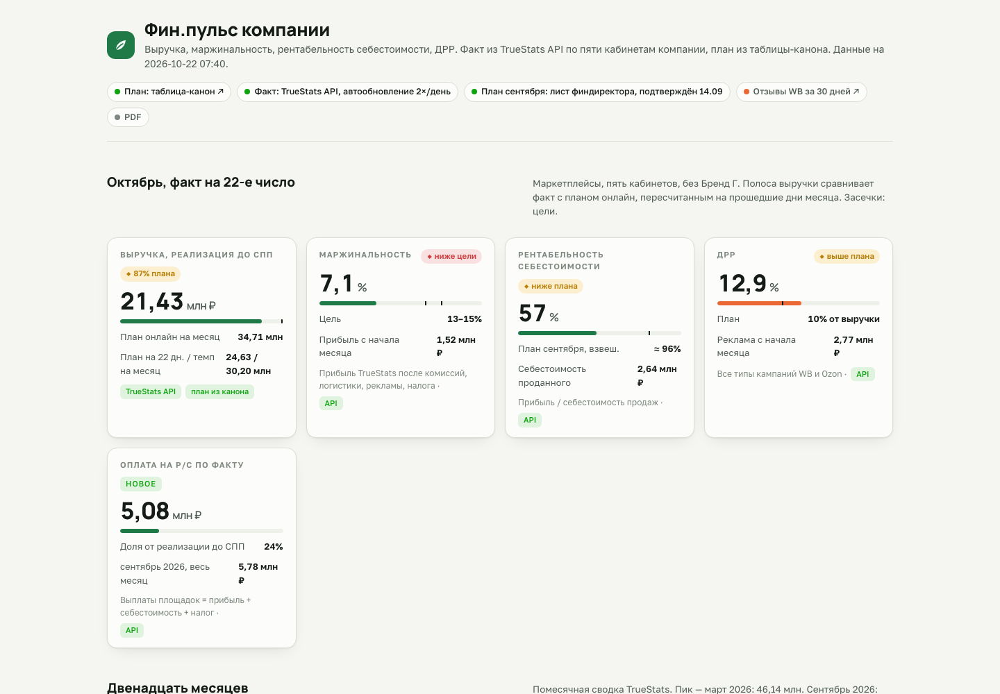
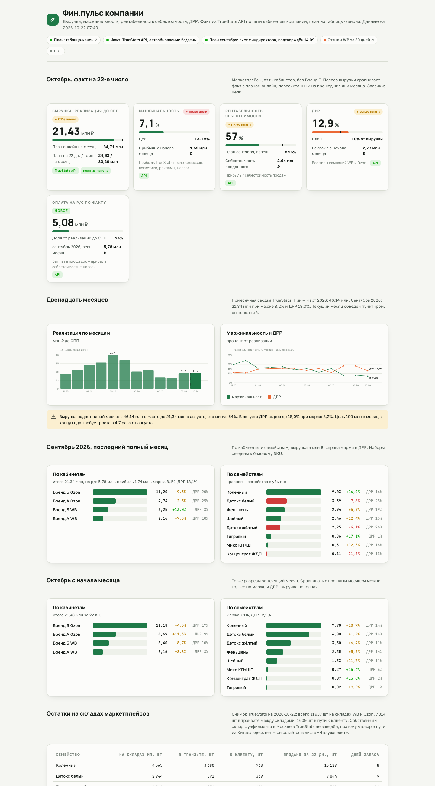

Выручка, маржа, рентабельность, ДРР и выплаты по пяти кабинетам маркетплейсов. TrueStats API, Google-таблица, один HTML.

Факт из API, план от команды, сравнение на одной странице, которая открывается без интернета.
Wildberries, Ozon и Яндекс Маркет двух юрлиц в одной сводке.

Полоса плана, пересчитанного на прошедшие дни, засечки целей, убыточные семейства выделены.
Робот пишет листы TS_…, команда ведёт план, товар в пути и розницу. Один источник для всех.
Блок «источники данных»: что подключено, что демо, что следующим шагом.
Четыре скрипта и запуск по расписанию. Графики рисуются как inline-SVG, без JS-библиотек.
flowchart LR L[launchd 07:40 и 13:40] --> R[run_finpulse.py] R --> T[truestats_pull.py<br/>факт по SKU, кабинетам, месяцам, остаткам] R --> O[onec_pull.py<br/>1С OData, только GET] T --> GS[(Google-таблица<br/>листы TS_…)] O --> GS GS --> B[build_finpulse.py<br/>план + факт → finpulse.html] T --> B B --> F[ftp_deploy.py<br/>FTPS-зеркало] F --> S[сайт под паролем]
Настоящие данные; названия компаний и брендов заменены.
Таблица-канон: робот заполняет свои листы, люди свои, дашборд читает обе части.
Сверена с финдиректором, в тексте страницы явно сказано, когда она может отличаться от себестоимости проданного.
Публикация переведена на FTPS с переиспользованием TLS-сессии, rsync оставлен как запасной путь.